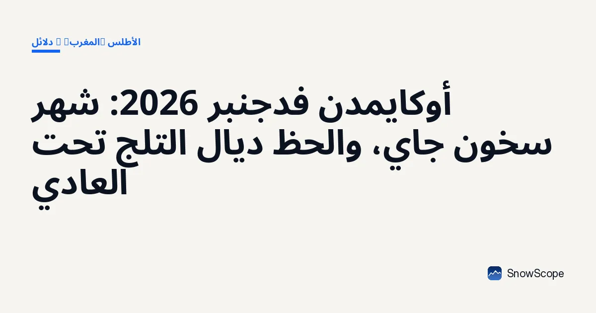
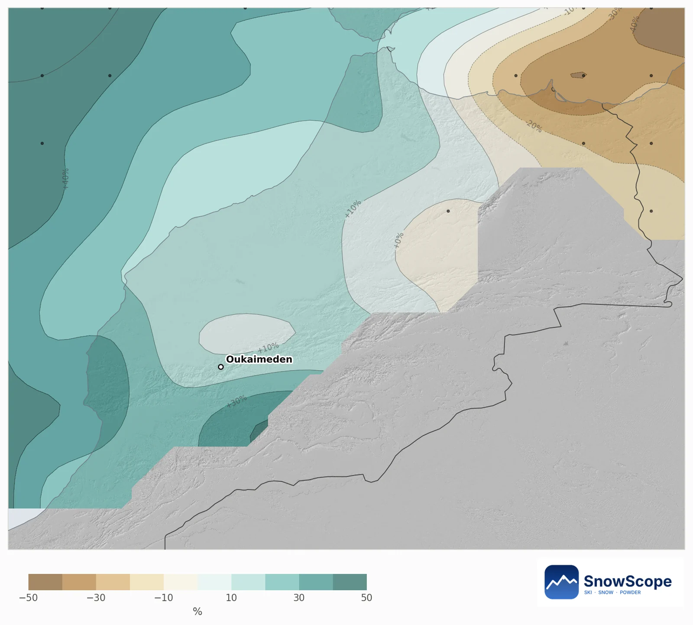
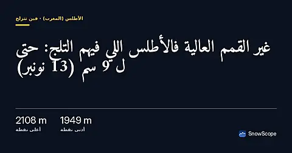

أوكايمدن فدجنبر 2026: شهر سخون جاي، والحظ ديال التلج تحت العادي
Oukaimeden كايتفرج عاري فـ 10 نونبر. التلج الجديد ديال 6 سم اللي وقع فـ الجهة الفوقانية الأسبوع اللي فات راح كامل, والأسبوع الجاي ماشي فيه تلج جديد. التوقعات الموسمية ديال دجنبر كتقول سخونة واضحة عبر الأطلس العالي, وهاد الحاجة كتقلب فرص التلج برا بزاف.
شوف توقعات التلج مباشرة ديال Oukaimeden فالتطبيق ديال SnowScopeالعلو ديال التلج، التنبيهات والخريطة 3D، فابور.

لا تلج على الأرض حالا
الخريطة كتوريك 0 سم فاي جاي: القاعدة فـ 2600 م, وسط الجبل فـ 2930 م, والقمة فـ 3260 م. غير 1 % من المحطة فـ حدود 60 كم كاينة بيضاء. كنعرضوا الجبل العاري بدالاها—القمم العالية ديال Toubkal حيت كايبدا التلج يصيق فـ أول الشتا—باش كتشوف فين كتبقا تتفرج لما يبدا الموسم.
الأسبوع اللي فات جاب 1 سم فـ الوسط و 6 سم فـ الفوق, ونهار ما بقاو. السبعة أيام الجايين ماشي فيهم حتى تلج جديد فـ لا واحد الارتفاع.
توقعات دجنبر: سخونة أكثر من العادة, التلج أقل
خريطة SnowScope كاتقارن الجبال ديال الأطلس العالي حول Oukaimeden مع تاريخهم ديال راسهم. عبر المنطقة, 95 % من المساحة كاتوري إشارة ضعيفة ديال التلج فـ دجنبر—بلايص أقل من العادة كاتجي لها تراكمات قوية. ولا واحد من 55 خلية جبلية كايقول على توقعات برا تلج أكثر.
الفرصة ديال التلج الجديد فـ فوق متوسط دجنبر كاتتراوح من 29 % إلى 43 % عبر الجبال. هاد معناتو تقريبا واحد فرصة من ثلاثة, فـ الأحسن, باللي هاد الشهر يكون أكثر رطوبة من الشتوات اللي فاتو.

دجنبر العادي شنو كاتجيب, وهاد السنة شنو اللي هاد الحال
فـ دجنبر نورمال, البيست الفوقانية ديال Oukaimeden حول 3200 م كاتجي لها 41 سم ديال التلج الجديد و كاتبقا 26 سم على الأرض فـ آخر يوم ديال الشهر. التوقعات ديال هاد السنة هي 37 سم ديال التلج الجديد بس غير 13 سم بقاين فـ 31 دجنبر. نطاق الخطأ واسع بزاف: بين 0 و 29 سم هو النطاق الأغلب. الفرصة باللي التلج يكون أعمق من العادة بـ نهاية الشهر كاتقف فـ غير 26 %.
السخونة هي السبب. الدجانبر اللي فاتو اللي يشبهو التوقعات ديال هاد الكم هيا 2010, 2023 و 1989—السنوات حيت العواصف الأطلسية كانت قليلة والهوا ديال دجنبر كان حار أكثر من البرد. فـ هاد الشهور, التلج اللي كاينسيح كاينهار بسرعة تحت الشمس الشتاوية القوية على الصخر العاري, خاصة فـ الارتفاعات المنخفضة.


النظام الموسمي الأوروبي: السخونة شبه مؤكدة, الإشارات ديال المطر مختلطة
51 تشغيل من التوقعات الموسمية الأساسية ديال أوروبا كاتتفق على واحد الحاجة بقوة. 94 % منهم كاتقول دجنبر يكون سخون أكثر من المتوسط ديال 1993-2016, مع تسخين متوسط ديال 2.2 °C عبر الأطلس العالي. هاد الاتفاق الواسع على السخونة ندرة بزاف.
الإشارات ديال المطر كاتفرق فـ التوقعات. 51 % كاتقول شهر أكثر رطوبة من العادة; 49 % كاتقول شهر أجف. بـ المتوسط, التوقعات كاتضيف 11 % لـ دجنبر نورمال ديال 33 ملم—فائض صغير. بس فـ هاد الجبال, الحرارة كتحسب أكثر من المطر الكلي. التلج كايرد قوي لـ هاد اللي كاينسيح (ارتباط 0.91 مع الهطول) بس كايخسر الأرض للسخونة. بعض درجات الحرارة الإضافية كتحول الهطول اللي كاينسيح لـ مطر فـ البيست المنخفضة وكاتسرع الذوبان فـ الفوق.

إمتا كتبقا تتفرج, وإمتا التلج كايبقا طويل
عاصفة أطلسية حتى تقدر تقلب الصورة ديال الشهر فـ أيام, بالاً التوقعات ديال دجنبر هي تغيير فـ الفرص, ما هي توقعات ثابتة. عواصف دجنبر نادرة فـ الأطلس, بس ما هي مستحيلة. لما تجي واحدة—مع هوا بارد فـ الفوق وهطول منظم—البيست الفوقانية ديال Oukaimeden كاتبيض بسرعة.
لو التلج كاينسيح, الفوق (فوق 3200 م) كايبقيه طويل لأن الهوا كايبقا بارد فـ الارتفاع والزاوية ديال الشمس تكون أضعف. البيست وسط الجبل والقاعدة كاتخسر التراكم فـ أيام لما يرجع الحار. هاد السبب باللي التلج أول الموسم فـ Oukaimeden هو نافذة, ما هي قاعدة.
نصايح للي كيتزلجو
- شوف توقعات العاصفة ديال 7 أيام قبل ما تخطط زيارة أول دجنبر. عاصفة أطلسية واحدة حتى تقدر تجيب التلج لـ البيست الفوقانية حتى فـ شهر سخون.
- لو التلج كاينسيح, تزلج أو مشي البيست الفوقانية (فوق 3200 م) فـ 48 ساعة بعد العاصفة; الارتفاعات المنخفضة كاتبقا عارية فـ أيام.
- جيب طبقات: دجنبر فـ الأطلس كاتتذبذب بين بعد الظهر سخون والليل بارد, والبيست الشمسية حتى تقدر تحس بحرارة الربيع حتى فـ 3000 م.
- لـ المشي فوق 3000 م, جيب جزامة صخرة أو كرامبونات; توقع البيست عاري غالب فـ دجنبر 2026 والجليد المفاجئ حيت مية الذوبان كاترجع جليد فـ الليل.
- قبل ما تروح برا البيست بعد نادي تلج ديال دجنبر, شوف النشرة ديال الانهيارات الرسمية لـ منطقة الأطلس.
على هاد الأرقام
العلو ديال التلج فالمحطات هو أكثر تلج فالجهة الفوقانية فالتاريخ المكتوب؛ هادو تقديرات لمنطقة، ماشي قياس فنقطة وحدة. التوقعات يمكن تتبدل. ديما شوف النشرة الرسمية ديال الانهيارات قبل ما تخرج من البيست.
كيفاش تستاشهد بهاد المقال
للبحث، التعليم ولا الصحافة: الأرقام والرسومات تقدر تعاود تخدم بيهم بحرية تحت CC BY 4.0 مع هاد الاستشهاد.
SnowScope (2026), أوكايمدن فدجنبر 2026: شهر سخون جاي، والحظ ديال التلج تحت العادي, https://snowscope.app/blog/ar/2026/11/oukaimeden-december-2026-snow-outlook.html, تشاف ف 2026-11-10
SnowScope (Atlas Labs). (2026, November 10). أوكايمدن فدجنبر 2026: شهر سخون جاي، والحظ ديال التلج تحت العادي. SnowScope snow reports. https://snowscope.app/blog/ar/2026/11/oukaimeden-december-2026-snow-outlook.html
BibTeX
@misc{snowscope2026oukaimedendecember2026sn,
author = {{SnowScope (Atlas Labs)}},
title = {أوكايمدن فدجنبر 2026: شهر سخون جاي، والحظ ديال التلج تحت العادي},
year = {2026},
month = nov,
howpublished = {\url{https://snowscope.app/blog/ar/2026/11/oukaimeden-december-2026-snow-outlook.html}},
note = {Published 2026-11-10 09:30 UTC; accessed 2026-11-10}
}· CC BY 4.0 · الطريقة، الداتا والأدوات →
تابع Oukaimeden
فابور: ميساج ملي يجي التلج، والتوقعات كل صباح.
تقارير أخرى ديال التلج

الأطلس فيه التلج غير موجود إلا فوق 3,000 م اليوم: 60 كم² على الأرض الفوقانية، مع 11 سم فقط. ولا واحد حتى من المحطات الثلاث ديال التزحلق فيها التلج.

التلج كاتتراجع لأعلى القمم فالأطلس. المحطات التلاتة ماعندهمش تلج اليوم؛ 40 كم² ديال القمم كاتبقى بيضة. المزيد ديال الذوبان جاي.

تقريبا 65 مم فوق Toubkal حتى ل 12 نونبر، ولكن علو 0 °C كيبقى قريب من 4,000 م: الشتا ف Oukaïmeden وفالوديان، والتلج غير فالفوق.